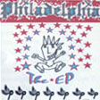
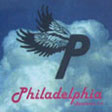
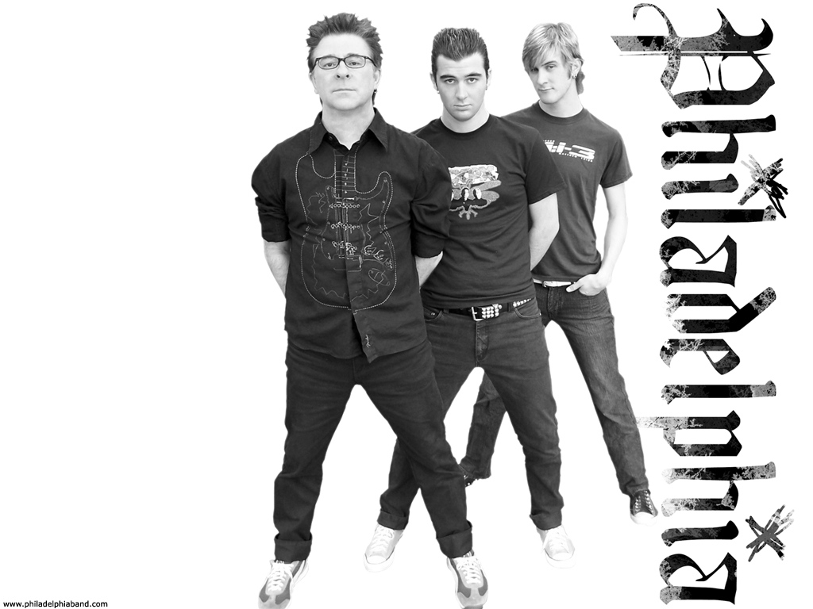
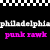

The EP
Recovered artwork from the archived site.
Oklahoma City Christian punk rock
High-energy punk songs, an undeniable message, and a recovered archive from the original philadelphiaband.com era.
From the recovered site
Whether it is the truth in Joshua's voice, the ferocity of Seth's hands and feet, or the unflinching rhythm of David's bass, this trio from Oklahoma City delivers a fast, melodic, message-driven sound.
Music

Recovered artwork from the archived site.

Self-titled release artwork from the original site.
Philadelphia joined PureVolume in late 2004 and reached top ten unsigned status in pop punk, punk, rock, and overall unsigned band rankings during April and May 2005.
Videos

Story
Philadelphia's archived bio presents the band as Joshua, Seth, and David: guitar and voice, drums, and bass pushing a high-energy punk rock sound from Oklahoma City.
The recovered gear notes are gloriously specific: Gibson SG and Mesa gear, Tama drums with Paiste and Zildjian cymbals, and an Ampeg bass rig. It reads like a band that cared as much about the stage impact as the song.
Archive

The original Flash gallery configuration was recovered, but the gallery movie and photo files were not available from the Wayback capture.
Shows
Currently no shows are listed in the recovered archive.
david@philadelphiaband.com